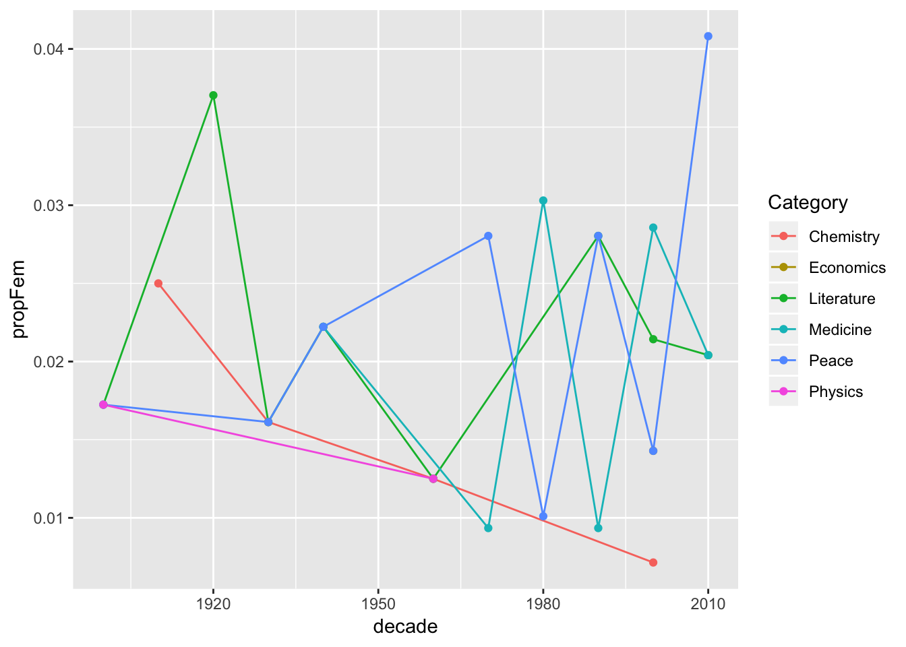

Nobel Prize Data Analysis
This is an R Markdown. I’m using it to show some examples of work done using R.
1 Nobel Prize Dataset
nobel %>%
group_by(`Birth Country`) %>%
summarise(total = n()) %>%
arrange(desc(total)) %>%
mutate(percent = total/sum(total))nobel %>%
group_by(Sex) %>%
summarise(total = n()) %>%
arrange(desc(total)) %>%
mutate(percent = total/sum(total))nrow(nobel)## [1] 969nobel %>%
group_by(Category,Sex) %>%
summarise(total = n()) %>%
arrange(desc(total))nobel %>% group_by(`Birth Country`)nobel <- nobel %>% mutate(usa_winner = ifelse(`Birth Country` == 'United States of America',1,0))
nobel <- nobel %>%
mutate(decade = floor(Year/10) * 10)
decadetot <- nobel %>%
group_by(decade) %>%
summarise(total = n()) %>%
arrange(desc(total))
nobel <- inner_join(nobel, decadetot, by = 'decade')usa_nobel <- nobel %>%
group_by(`Birth Country`, decade) %>%
summarise(count = n(),
prop = (count/mean(total))) %>%
arrange(desc(decade))
winner <- usa_nobel %>%
group_by(decade) %>%
summarise(winner = `Birth Country`[which.max(prop)],
winprop = max(prop))
usa_nobel <- inner_join(usa_nobel, winner, by = 'decade')1.1 Country with Highest Winning proportion
winner %>% ggplot(aes(decade, winprop)) + geom_point(aes(color = winner, size = 100)) + geom_smooth() + scale_y_continuous(limits = c(0,1), expand = c(0,0))## `geom_smooth()` using method = 'loess' and formula 'y ~ x'
1.1.1 Women’s Proportional Winning Rate
nobel <- nobel %>% mutate(female = Sex == "Female")
nobel %>% group_by(decade) %>%
summarise(count = n())nobelfem <- nobel %>%
group_by(decade, Category, Sex) %>%
summarise(count = n(),
propFem = count/mean(total)) %>%
filter(Sex == 'Female')
ggplot(nobelfem, aes(decade, propFem, color = Category)) + geom_line() + geom_point()
1.1.2 First Woman to Win a Nobel Prize
nobel %>%
group_by(Year) %>%
filter(Sex == "Female") %>%
select(Year,Category, `Full Name`)Repeat Winners
nobel %>%
group_by(`Laureate ID`, `Full Name`) %>%
count() %>%
select(`Full Name`,n, `Laureate ID`) %>%
filter(n > 1)Age of winners
nobel_age <- nobel %>%
mutate(age = (Year) - year(`Birth Date`))
nobel_agenobel_age %>%
top_n(10, (Year)) %>%
select(`Full Name`, age, Year) ggplot(nobel_age, aes(Year, age)) + geom_point() + geom_smooth(aes(color = Category)) +
scale_y_continuous(expand = c(0,0))## `geom_smooth()` using method = 'loess' and formula 'y ~ x'## Warning: Removed 31 rows containing non-finite values (stat_smooth).## Warning: Removed 31 rows containing missing values (geom_point). Oldest and Youngest
Oldest and Youngest
nobel_age %>%
filter(age == age[which.max(age)]) %>%
select(`Full Name`,age, `Birth Country`)nobel_age %>%
filter(age == age[which.min(age)]) %>%
select(`Full Name`, age, `Birth Country`)Nobel Organization Winners
g <- nobel %>%
group_by(decade) %>%
filter(`Laureate Type` == "Organization") %>%
select(`Full Name`, decade, Category)
ggplot(g,aes(decade)) + geom_bar()Copyright © 2019 Tomas Leriche. All rights reserved.